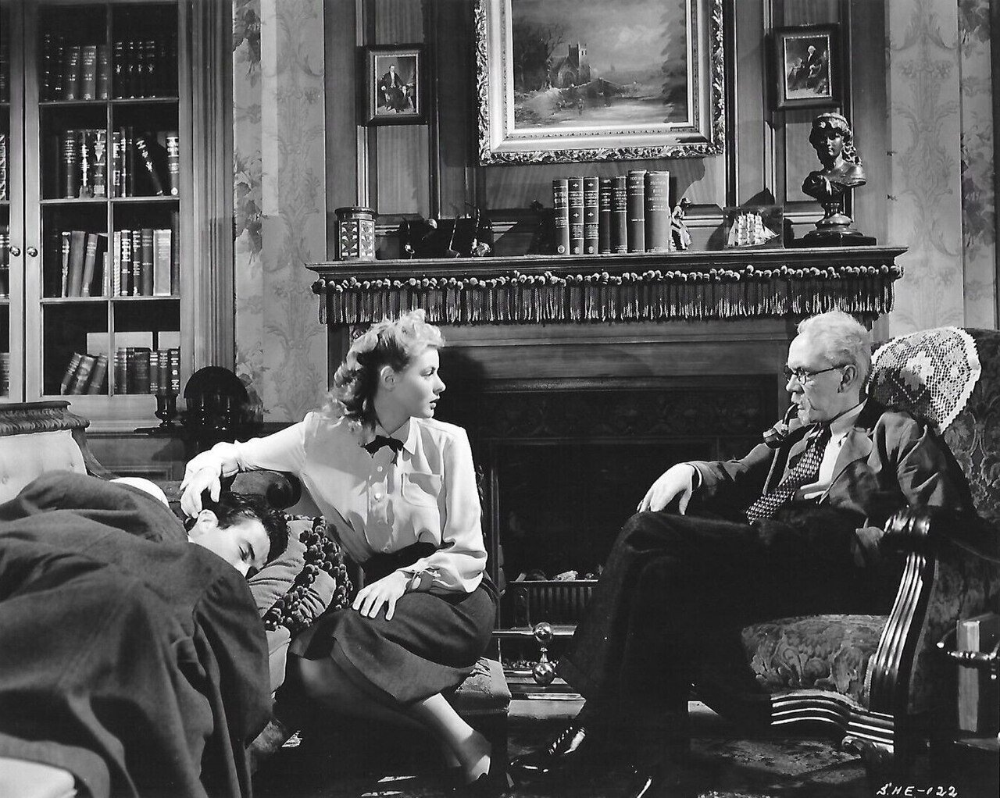

I have been carrying "It's Hard to Speak My Heart" in my audition book for several years. It fits my voice: a mid-to-high baritone, classical foundation and continuing the process of developing a head-first pop-adjacent grain, comfortable in the JRB harmonic language, and mostly able to sustain the emotional weight of the lyric without straining.
For a long time, that was enough. Vocal suitability felt like sufficient preparation. What I've since come to understand — through a decade of directing, teaching, and the particular rigor of my own ongoing performance work — is that vocal suitability is the floor, not the ceiling. What follows is the preparation framework I now bring to this piece, and to audition material generally.
The History in the Song
Leo Frank was a Jewish factory superintendent convicted in 1913 of murdering thirteen-year-old Mary Phagan, a worker at his Atlanta pencil factory. The case was prosecuted on circumstantial evidence, in an atmosphere of rising antisemitism and populist resentment. Modern historical consensus holds that the likely perpetrator was Jim Conley, the factory's janitor.
Governor John Slaton commuted Frank's death sentence in 1915, recognizing the evidentiary problems with the conviction. A mob abducted Frank from prison and lynched him. The men responsible faced no legal consequences and several later held public office. The Anti-Defamation League was founded in direct response to the case.
The song is Leo's courtroom testimony. He knows the verdict is already written. The song is not an appeal — it's an indictment that will outlast the room.
The Musical Context
Jason Robert Brown and Alfred Uhry created Parade in 1998, with Harold Prince directing the original Broadway production. The show won Tony Awards for Best Book and Best Original Score despite running only 85 performances. The 2023 Broadway revival starred Ben Platt and Micaela Diamond and ran significantly longer, reintroducing the work to a new generation of performers and audiences.
The song is Leo's Act Two testimony — a moment of restraint in a score that tends toward the emotionally large. The musical language reflects Leo's knowledge that he's already lost. The argument he makes is for the record.
Who Am I Talking To?
The first interpretive question I ask of any piece is: who is the character actually addressing? Not just the literal scene partner, but the real object of the communication.
In this song, Leo is nominally speaking to the jury and the courtroom. But I've come to believe he's speaking to history — to the people who will read about this case in fifty years, who will understand what the people in this room chose not to. The song is an address to the future. That single interpretive choice changes everything about how it's delivered.
Finding the Beats — Verb Actioning
| Beat | Verb | What's happening |
|---|---|---|
| B1 | I warn you | He establishes who he is before they get the wrong idea. Controlled, pre-emptive, speaking past this room to those who come after. |
| B2 | I reform you | Denial as an act of historical record. He's not arguing to convince this jury. He's restoring the shape of truth against a lie being built in real time. |
| B3 | I indict you | Bitter lucidity. The argument has run out and he knows it. He sees through these men and names it for history, not for them. |
| B4 | I compel you | The musical bridge opens. He turns back outward and reaches — not arguing, not explaining, trying to force a human connection across an unbridgeable distance. |
| B5 | I beg you | Everything stripped away. No strategy, no argument, no self-possession. Just a man asking to be believed. |
Verb actioning is a rehearsal technique developed by Bill Gaskill and Max Stafford-Clark in British theatre in the 1970s. The premise: every line a character speaks is an attempt to do something to another person, and that action can be expressed as a transitive verb — I warn you, I compel you, I beg you.
For this song, I identify five primary actions across four structural sections:
- Warn — opening section
- Reform — the denial section
- Indict — the pivotal turn
- Compel — appeal to understanding
- Beg — final section
The move from warn to beg is the story of the song. The indict beat is what makes that journey feel true rather than sentimental — it's the moment Leo stops defending himself and starts prosecuting the room.
The Body Doing the Work — Chekhov & Laban

Michael Chekhov's psychophysical technique proceeds from a simple premise: the body knows things the mind doesn't, and the path to psychological truth runs through physical commitment. His Psychological Gesture technique asks the performer to embody an archetypal physical action that captures the essential quality of a moment — and then, after fully committing to that action externally, to internalize it until the physical gesture disappears but its quality remains.
For this song, I assign specific gestures to each beat:
- Warn / Push — arms extending forward, deliberate force, clear boundary
- Reform / Pull — drawing something distorted back into true shape
- Indict / Smash — conclusive downward force, no ambiguity
- Compel / Reach and Draw — extending out, then pulling back toward the chest
- Beg / Reach — slow extension outward, open palms, nothing withheld
Rudolf Laban's Movement Analysis provides a complementary vocabulary. Where Chekhov gives us archetypal gestures, Laban gives us qualities: Weight (strong/light), Space (direct/indirect), Time (sudden/sustained), Flow (bound/free). Together, these two systems offer a precise language for physical and emotional intention that translates directly into vocal delivery.
The seven-step integration process: sing the phrase alone → select the psychological gesture → perform the gesture with full energy → add the phrase to the gesture → repeat until internalized → remove the physical gesture → carry the quality through the voice.
Where the Eyes Go
Stanislavski identified the audience's attention as a kind of gravitational field — a "black hole" that pulls the performer out of the scene if they lose their object of focus. For a singing actor performing for an audition panel, managing this is particularly acute.
I identify three registers of focus for this song:
- Immediate focus — intimate, close at hand; used in the most personal moments
- Mid focus — broader declarations addressed to groups; the courtroom
- Distant focus — the most dangerous when unspecific; requires attachment to something concrete, something future
Key principles: focus must accompany thought, thought must precede text, and mechanical focus is always detectable. Gaze loses power over time and must be refueled through deliberate shifts and returns. Score study should identify where the eyes go and why — this is preparation work, not improvisation.
The Audition Cut
An audition cut is not an excerpt — it's an argument. It demonstrates vocal suitability, technique, interpretive intelligence, and emotional range in the time available. The cut must enter already in motion and move through multiple emotional states.
For this piece, I begin at the bridge, creating immediate dramatic crisis while the progression from compulsion to begging shows range. The cut ends quietly — not climactically. The choice to not end on the big note is itself interpretive information about the character.
The goal of all the preparation above — actioning, gestures, Laban qualities, focus — is that none of it is visible in the room. What the panel sees is a character with something urgent to say. The methodology is infrastructure. The performance is what the infrastructure makes possible.
What the Process Is Actually For
These systems — Stafford-Clark's actioning, Chekhov's Psychological Gesture, Laban's Movement Analysis — were built independently, across different decades and disciplines. They function together because they're all trying to solve the same problem: how do you make performed emotion feel true rather than demonstrated?
I recommend selecting audition material that connects thematically to whatever you're currently performing. The resonance between concurrent work deepens interpretation in ways that isolated preparation can't replicate. I'm currently in Fiddler on the Roof. The thematic overlap with Leo Frank's story — Jewish identity under institutional threat, the machinery of persecution — isn't incidental. It's in the room with me when I sing.
The difference between a song that fits your voice and a song you've lived inside is not a matter of talent. It's a matter of methodology.